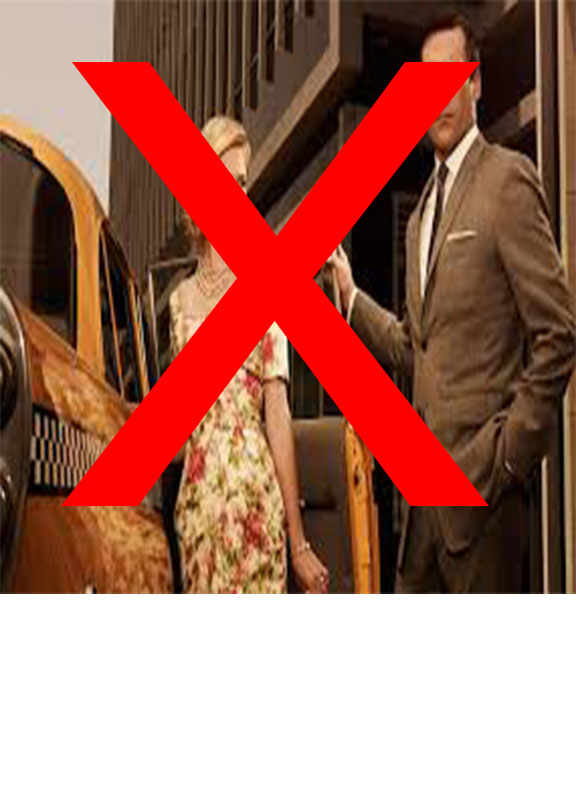
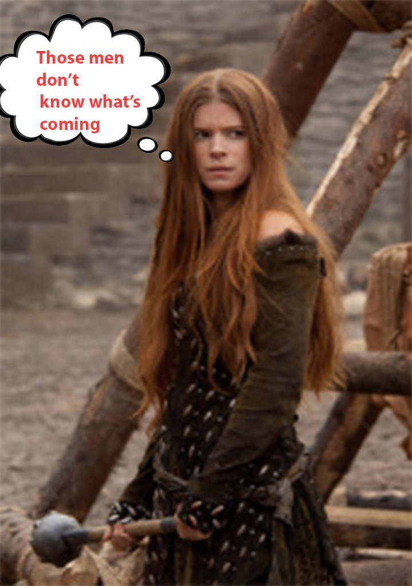
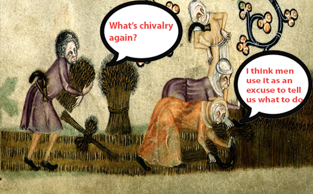
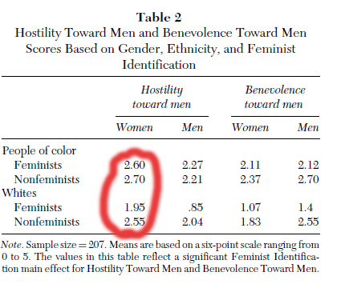
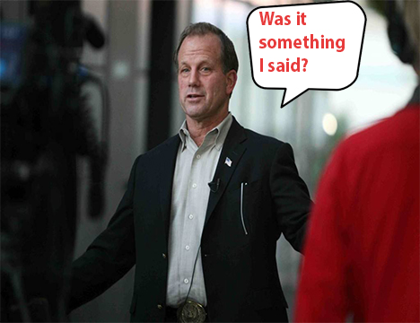
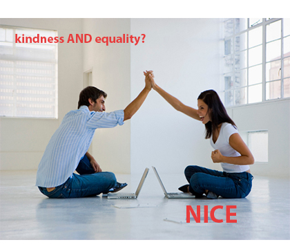

1. Many people don’t actually understand chivalry
The code of chivalry was developed in the Middle Ages as a guideline for the way that men were “supposed” to act towards women. However, this code implied women to be “weaker” than men, and pushed men to “take care of” woman. Today, there is a common misconception that “chivalry” still refers exclusively to an outdated, say 1950’s, mindset where men were outright expected to hold doors or lay down their coats for women, implying that women were not as capable as men (Chuirazzi).
2. Modern chivalry is not dead, just different
First and foremost, modern chivalry is not exclusively about men trying to take care of women or about proving who is the superior gender (Chuirazzi). Modern chivalry is centered around mutual respect and kindness on all parts. “This notion of mutual respect between all people works to empower humanity as a whole. You can be a feminist and still enjoy chivalrous acts,” (Chuirazzi). Men and woman can work together equals, as seen above.

3. Even in the middle ages, many women didn’t “need” chivalry
The Medieval period is where the idea of a “damsel in distress” originates, however many medieval women certainly did not fit this stereotype. For example Canny Leis, well known in her pre-reformation Scottish village was charged for attacking several men in her town, (Ewan, p. 155). Although this doesn’t exactly prove cooperation between the ideals of feminism and chivalry, it does prove that women did not just allow men to control them, thus eventually paving the way for more equality and respect between both genders, the foundation of both modern feminism and chivalry.
4. In fact even when chivalry was at its height, women were not helpless
Archeological evidence suggests that lower class medieval women did anything but sit back and let men work for them. Women were known to be very competent and did all housework and even fieldwork (Smith, p. 316). There was also a considerable “female gender solidarity,” in many medieval towns, which although may not have wielded any legal power, definitely made women feel empowered and less alone (Smith, p. 316). For example, as seen above women worked in the fields together and had a type of solidarity.
5. “Man-haters” often cloud popular views
Feminists do not hate men. However, some women hate men and may or may not call themselves “feminists”. Tumblr user “youdontneedfeminism” blatantly says, “I hate men…because they continually act in ways that show they deserve to be hated,” (Why I Hate Men). Some men just assume that feminist women “just want power over them,” and metaphorically want to “cut their heads off,” (Philips, p. 12). Ask men.com even goes as far to give a “feminist opinion,” on different subject matters, assuming that all feminists have the same opinion, not to mention using these “opinions” to imply feminists to be angry and anti-male, (Chivalry vs. Feminism).
6. This “man hating” form of feminism is simply untrue
Once again, feminists do not hate men. In fact one study that was conducted on “Hostility Toward Men and Benevolence Toward Men Scores Based on Gender, Ethnicity, and Feminist Identification,” found that feminists and non-feminists had the same levels of hostility towards men (Anderson, p. 220). Results of that study are shown above. In fact the goal of true feminists is to obtain “equality of all people regardless of sex;” these man-hating women are actually referred to as “Misandrists,” (5 Reasons Why So Many People Believe Feminism Hates Men and Why They’re Not True).
7. Feminists themselves concur that they enjoy individual acts of “chivalry”
Feminist Lulu Chang of Bustle.com says she loves it when a man takes her out to dinner, however, she is just as happy to take him out to dinner, (Chang). She claims “Feminism has become synonymous with an…ostentatious need to prove a point,” (Chang). She argues that there’s nothing wrong with allowing a man to perform kind deeds for a woman, as long as he doesn’t mind if sometimes she is the one performing kind deeds for him, (Chang). She does not believe that a woman sometimes paying the check or holding the door is really a threat to “chivalry,” (Chang).
8. There is more attention than ever on true respect and equality
More and more people are starting to realize that men and women should not be pitted against each other and instead should work to foster mutual understanding and cooperation. The media also plays a role in bringing negative light to people, particularly male politicians, who are not supportive of this movement for equality. For example, when John Koster said, “The rape ‘thing’ is not an excuse for an abortion,” an offensive statement to both women and rape victims, he received harsh media backlash, from both males and females, making him look like a fool, (Meacham, p. 89). People are now generally more open to the idea of true equality, which is why these “modern” ideals of chivalry and feminism are gaining momentum while the opposition is harshly criticized.
9. Feminism and chivalry both have the same goals
Feminism strives for equality for everyone, chivalry strives for respect, honesty and support between both men and women (Chuirazzi). Sara Chuirazzi of hercampus.com states that, “It’s not so much “chivalry” that women want as much as polite gestures and respect. And guess what? Men deserve that just as much as we do! It’s not that a man needs to open my car door for me. While I appreciate that, I can open the door for myself—it’s the compassion of another person,” (Chuirazzi). These mutual ideas of compassion respect and equality prove that chivalry and feminism are much more compatible than many people would think.
 "© Copyright 2015. All rights reserved. Created by Bridget Leighton